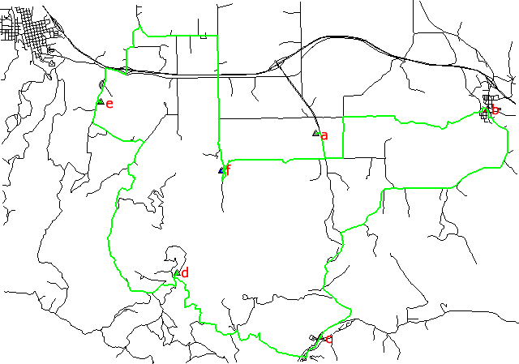
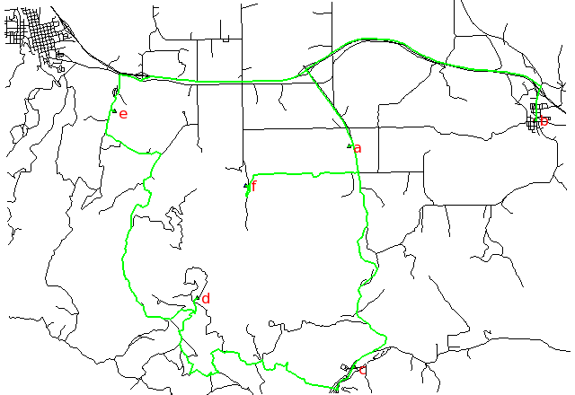

Costs may be either line lengths, or attributes saved in a database
table. These attribute values are taken as costs of whole segments, not
as costs to traverse a length unit (e.g. meter) of the segment.
For example, if the speed limit is 100 km / h, the cost to traverse a
10 km long road segment must be calculated as
length / speed = 10 km / (100 km/h) = 0.1 h.
Supported are cost assignments for arcs,
and also different costs for both directions of a vector line.
For areas, costs will be calculated along boundary lines.
The input vector needs to be prepared with v.net operation=connect in order to connect points representing center nodes to the network.
Points specified by category must be exactly on network nodes, and the input vector map needs to be prepared with v.net operation=connect.
Shortest path, along unimproved roads:

Fastest path, along highways:

Searching for the shortest path using distance and the fastest path using traveling time according to the speed limits of different road types:
# Spearfish
g.copy vect=roads,myroads
# we have 6 locations to visit on our trip
echo "1|601653.5|4922869.2|a
2|608284|4923776.6|b
3|601845|4914981.9|c
4|596270|4917456.3|d
5|593330.8|4924096.6|e
6|598005.5|4921439.2|f" | v.in.ascii in=- cat=1 x=2 y=3 out=centers col="cat integer, \
east double precision, north double precision, label varchar(43)"
# verify data preparation
v.db.select centers
v.category centers op=report
# type count min max
# point 6 1 6
# create lines map connecting points to network (on layer 2)
v.net myroads points=centers out=myroads_net op=connect thresh=500
v.category myroads_net op=report
# Layer / table: 1 / myroads_net
# type count min max
# line 837 1 5
#
# Layer: 2
# type count min max
# point 6 1 5
# find the shortest path
v.net.salesman myroads_net ccats=1-6 out=mysalesman_distance
# set up costs as traveling time
# create unique categories for each road in layer 3
v.category in=myroads_net out=myroads_net_time opt=add cat=1 layer=3 type=line
# add new table for layer 3
v.db.addtable myroads_net_time layer=3 col="cat integer,label varchar(43),length double precision,speed double precision,cost double precision,bcost double precision"
# copy road type to layer 3
v.to.db myroads_net_time layer=3 qlayer=1 opt=query qcolumn=label columns=label
# upload road length in miles
v.to.db myroads_net_time layer=3 type=line option=length col=length unit=miles
# set speed limits in miles / hour
v.db.update myroads_net_time layer=3 col=speed val="5.0"
v.db.update myroads_net_time layer=3 col=speed val="75.0" where="label='interstate'"
v.db.update myroads_net_time layer=3 col=speed val="75.0" where="label='primary highway, hard surface'"
v.db.update myroads_net_time layer=3 col=speed val="50.0" where="label='secondary highway, hard surface'"
v.db.update myroads_net_time layer=3 col=speed val="25.0" where="label='light-duty road, improved surface'"
v.db.update myroads_net_time layer=3 col=speed val="5.0" where="label='unimproved road'"
# define traveling costs as traveling time in minutes:
# set forward costs
v.db.update myroads_net_time layer=3 col=cost val="length / speed * 60"
# set backward costs
v.db.update myroads_net_time layer=3 col=bcost val="length / speed * 60"
# find the fastest path
v.net.salesman myroads_net_time alayer=3 nlayer=2 afcol=cost abcol=bcost ccats=1-6 out=mysalesman_time
# Display the results g.region vect=myroads_net # shortest path d.mon x0 d.vect myroads_net d.vect centers -c icon=basic/triangle d.vect mysalesman_distance col=green width=2 d.font Vera d.vect centers col=red disp=attr attrcol=label lsize=12 # fastest path d.mon x1 d.vect myroads_net d.vect centers -c icon=basic/triangle d.vect mysalesman_time col=green width=2 d.font Vera d.vect centers col=red disp=attr attrcol=label lsize=12
Last changed: $Date$